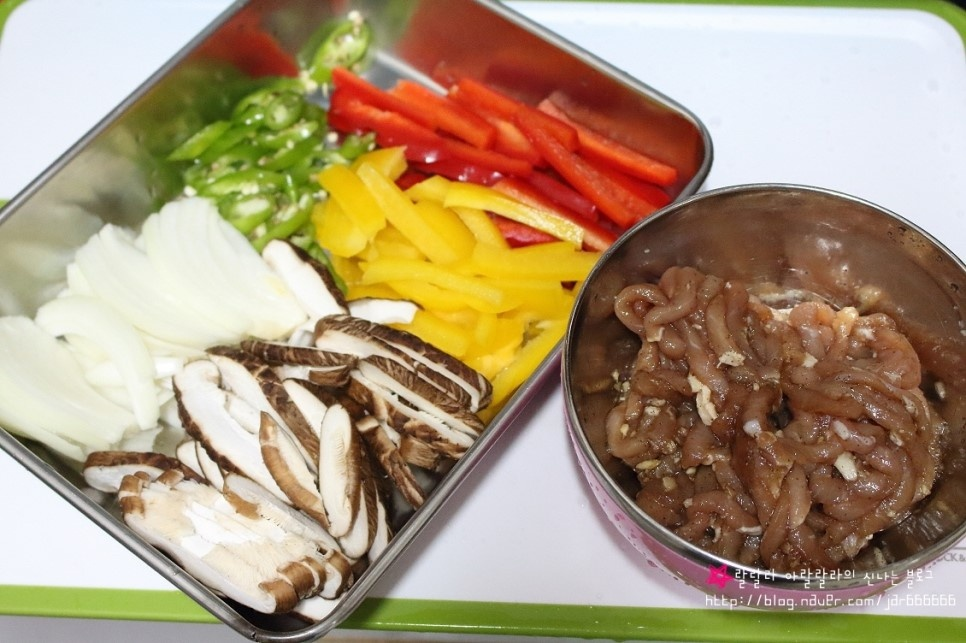
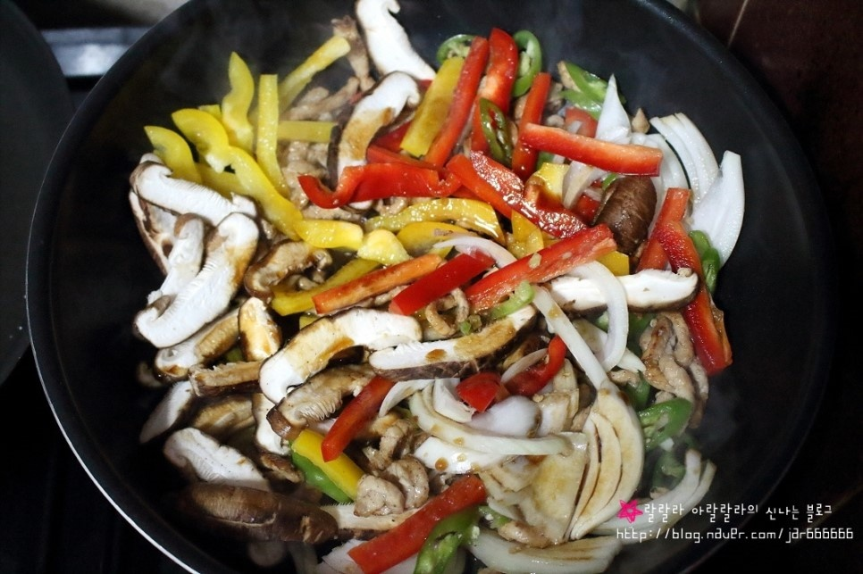
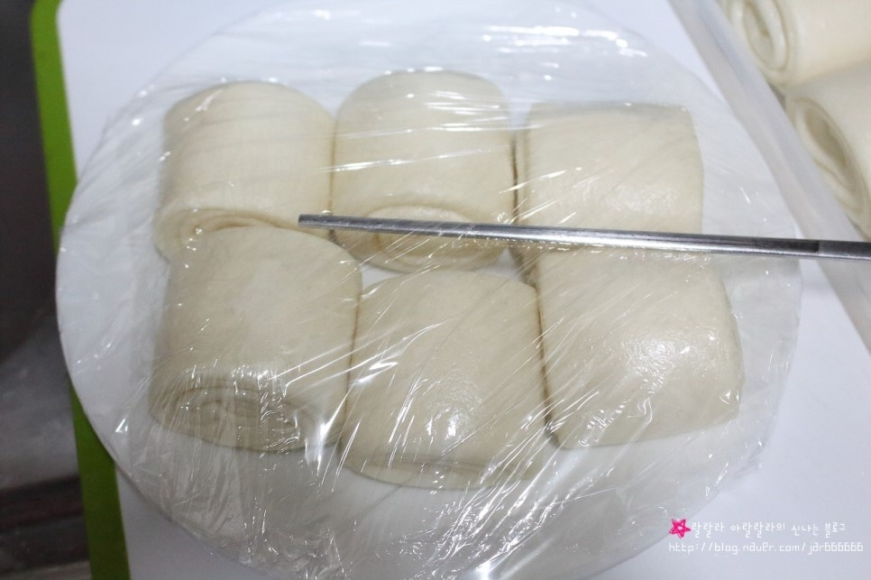

Chinese Food


재료 리스트
돼지 등심 300g | 파프리카 1개 | 양파 1/2개 | 표고 버섯 3개 | 청양고추 2개 | 꽃빵
양념 소스( 고추 기름 한 스푼 | 다진 마늘 반스푼 | 굴소스 두 스푼 | 진간장 두 스푼 | 올리고당 한스푼 | 맛술 두스푼 )
레시피
1. 등심을 길쭉한 모양으로 잘라주신 뒤 밑간을 해주세요.( 다진 마늘 반스푼, 맛술 한스푼, 진간장 두 스푼, 설탕 반스푼)
채소류도 고기와 비슷하게 길쭉한 모양으로 썰어주세요.

2. 준비된 팬에 고추기름 한스푼과 다진 마늘을 넣고 볶다 등심을 넣고 볶아주세요.
고기가 반쯤 익었을 때 손질해 둔 채소를 넣고 양념과 함께 센불에서 볶아주세요.

3. 냉동상태의 꽃빵을 담고 랩을 씌워 전자레인지에 1분 30초간 조리해주세요.

4. 볶아준 고추 잡채와 꽃빵을 접시에 옮겨 담으면 고추 잡채 완성입니다.
깐풍 만두 완성 !!